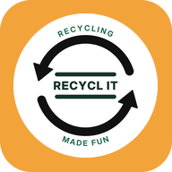

You’re offline
RECYCL IT! couldn’t be loaded because this device has no connection and the app hasn’t been saved here yet. Connect once and open it again; after that it opens without a connection.

RECYCL IT! couldn’t be loaded because this device has no connection and the app hasn’t been saved here yet. Connect once and open it again; after that it opens without a connection.